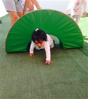
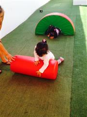
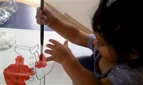
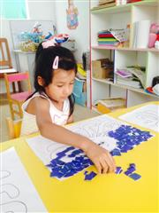
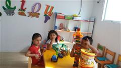
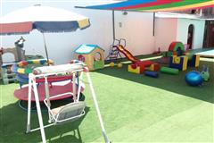

940 279 049
Guardería en Nido Bambilandia♥
El servicio de guardería de el Nido Bambilandia, se caracteriza por las variadas actividades que se realizan durante la estadía de su hijo/a.

En la sección ABC se detallan los diferentes juegos/actividades que se realizan en Guardería Bambilandia.
Actividades Psicomotrocidad
Son distintos los juegos que se pueden aplicar para la estimulación psicomotora, el objetivo es trabajar las destrezas finas, coordinación vasomotora, coordinación y equilibrio.

Los juegos actividades que desarrollen la percepción espacio-temporal contribuyen a la estimulación de receptores sensoriales, el cual ayudará mejorar los reflejos de los niños; y todo esto durante su permanencia en guadería! pero hay mas...
Aprendizaje continuo
Es un hermoso regalo ver como nuestros niños logran sus objetivos en cada actividad realizada; el esfuerzo y dedicación que le ponen para culminar cada tarea es muy admirable, y la competencia saludable ayuda a definir su personalidad.
 
Estamos muy orgullosos de aportar nuestro granito de arena para que todo esto suceda, con la colaboración de los padres y en un entorno más cercano de nuestros queridos niños.
Aprendiendo Jugando
En Bambilandia tenemos muy clara la idea, que jugando es uno de los mejores métodos para aprender, de hecho estudios demuestran que aprender através del juego tiene 3 principales beneficios: Jugar estimula la interacción, mejora el desarrollo congnitivo y estimula la relación interpersonal.

Es por eso que, en la agenda de Bambi Guardería se tiene momentos exclusivos para el aprendizaje através del juego.
Bambilandia con mucho ♥ les espera
Bambilandia Guardería, un lugar ideal para el crecimiento de su hijo/a, contamos con los ambientes adecuados para la estimulación temprana y un patio amplio de juegos, donde se realizan dinámicas para el desarrollo de los niños.
Estamos de 7:00 a.m a 7:00 pm.

Bambilandia los espera con los brazos abiertos,
para información contacto aquí
"Educar en Valor, Amor y Libertad."